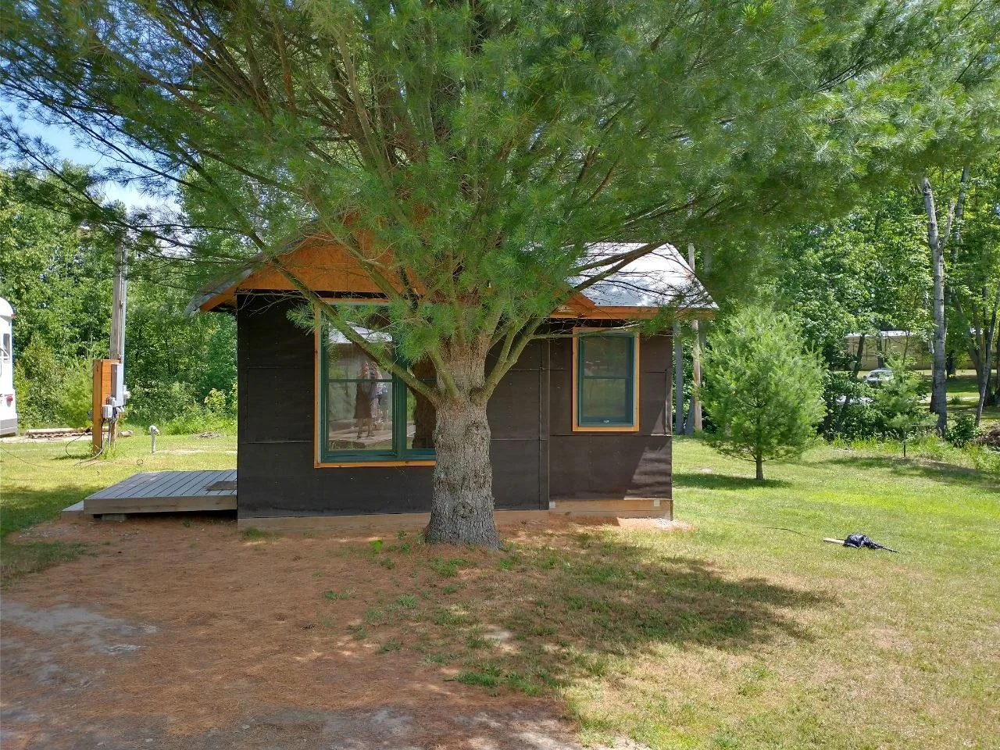

Not waiting
for someday.
We’re building toward the place we hope to retire into. A place to grow some food, keep learning, spend time together, and stay part of the life outside the door.


With a life happening on the way.
A good place to keep living.
The published story began with recovery, an unfinished little place in northern Michigan, and a need for things to feel quieter. Over time, the work has started to add up to something bigger: a life we can see ourselves growing into.
We want to stay physically active in the garden and around the property. We want to keep our minds busy learning, experimenting, and solving the next ordinary problem. And we want more time to cook, eat, sit outside, watch the wildlife, and enjoy being here together.
Growing some of our own food is part of that. A few vegetables, berries, or herbs can make us a little more capable and give us the satisfaction of knowing where some of dinner came from. We’re starting with what fits our real lives.
We’re still figuring it out. The city beds have failed while we were away. The cabin has needed more work than we expected. We’ve made things we love and things we’ve wanted to walk away from for a while. Those parts belong in the story, too.
The place is the setting.
The life is the point.
A cabin wall, a berry trellis, a bird feeder, an herb pot, or a comfortable patch of shade can all belong here. The question is whether it makes the place more useful, more enjoyable, or more ours.
We aren’t writing the rules for anybody else’s retirement. We’re doing the work, trying things, and sharing what happens. If an idea here fits your own place—or the life you’re hoping to grow into—we’d love that.
Read the beginning, rough edges and all